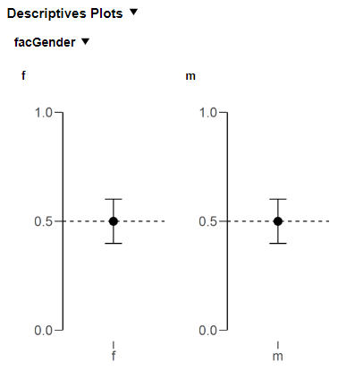

flowchart TD
Main["Main function"] -->|"stores table"| JR["jaspResults"]
Main -->|"stores state"| JR
TableFn[".fillTable()"] -->|"reads state"| JR
PlotFn[".fillPlot()"] -->|"reads state"| JR
TableFn -->|"fills table"| JR
PlotFn -->|"fills plot"| JR
5 Writing the R Backend
5.1 Understanding jaspResults
The central concept in JASP’s R API is jaspResults — a persistent, named container that lives for the entire lifetime of an analysis. Think of it as a big box you can throw things into and pull things out of at any point:
- Tables (
createJaspTable) - Plots (
createJaspPlot) - Containers (
createJaspContainer) — grouping boxes that hold other tables/plots - State (
createJaspState) — cached R objects (models, intermediate results) - HTML (
createJaspHtml) — free-form text output
You store items by assigning them to named slots: jaspResults[["myTable"]] <- table. You retrieve them the same way: jaspResults[["myTable"]]. If a slot is NULL, the item hasn’t been created yet.
5.1.1 Why this matters
In a traditional R script you’d pass individual objects between functions — the model object to the table function, then to the plot function, etc. In JASP, every function just receives jaspResults and can reach into it for whatever it needs. This eliminates the need to pass around dozens of objects:
5.1.2 Automatic caching
Every item in jaspResults declares which options it depends on (via $dependOn()). When the user changes an option in the GUI:
- Items that depend on the changed option are automatically invalidated and recreated
- Items that don’t depend on it are kept as-is — no recomputation
This is why every output function starts with if (!is.null(jaspResults[["myTable"]])) return() — if the table already exists and its dependencies haven’t changed, skip it entirely.
5.1.3 Real-world example: Independent Samples T-Test
Here’s how the actual JASP t-test module uses jaspResults (simplified from the source):
TTestIndependentSamples <- function(jaspResults, dataset, options) {
ready <- length(options[["dependent"]]) > 0 && options[["group"]] != ""
if (ready) {
dataset <- .ttestReadData(dataset, options, "independent")
.ttestCheckErrors(dataset, options, "independent")
}
# Each function reaches into jaspResults for what it needs
.ttestMainTable( jaspResults, dataset, options, ready)
.ttestNormalTable( jaspResults, dataset, options, ready)
.ttestQQPlot( jaspResults, dataset, options, ready)
.ttestDescriptives( jaspResults, dataset, options, ready)
.ttestDescriptivePlot(jaspResults, dataset, options, ready)
return()
}Notice: no return values are passed between functions. Every function writes to and reads from jaspResults. If the user only toggles the “Descriptives” checkbox, only .ttestDescriptives() and .ttestDescriptivePlot() re-run — the main table is still cached.
5.2 The analysis function pattern
Every JASP analysis follows the same structure. The main function name must match the func field in Description.qml (case-sensitive). It always receives three arguments:
MyAnalysis <- function(jaspResults, dataset, options) {
# 1. Check if we can compute results
ready <- length(options[["variables"]]) > 0
# 2. Read data and check for errors
if (ready) {
dataset <- .myReadData(dataset, options)
.myCheckErrors(dataset, options)
}
# 3. Create outputs (tables, plots)
.myMainTable(jaspResults, dataset, options, ready)
.myMainPlot(jaspResults, dataset, options, ready)
return()
}| Argument | Description |
|---|---|
jaspResults |
The persistent results container — store all tables, plots, state, and containers here |
dataset |
The dataset, preloaded by JASP when preloadData: true (the default and recommended setting). NULL if preloadData: false |
options |
Named list of user selections from the QML form |
Important
Always access options with double brackets: options[["myOption"]]. Single brackets or $ allow partial matching which can cause subtle bugs.
5.3 Step 2: Check if results can be computed
Most analyses need minimum input before computing. Determine this early:
ready <- length(options[["variables"]]) > 0When ready is FALSE, your output functions should still create tables and plots (showing dots/empty placeholders) but skip the computation step.
flowchart LR
A(["Start"]) --> Decision{"Input sufficient?"}
Decision -- yes --> B["Compute & display results"]
Decision -- "not yet" --> C["Show empty placeholders"]
5.4 Step 3: Read the dataset
5.4.1 preloadData — the preferred approach
With preloadData: true (the default in Description.qml), JASP passes the dataset directly to your R function via the dataset argument. This is the preferred way to handle data in JASP. Columns are automatically converted to the types requested by QML components — if an AssignedVariablesList has allowedColumns: ["scale"], those columns arrive in R as numeric.
Because the data is already loaded, your “read data” helper typically just does any necessary subsetting or listwise deletion:
.myReadData <- function(dataset, options) {
# For listwise deletion (replaces the old exclude.na.listwise argument):
exclude <- unlist(options[["variables"]])
dataset <- jaspBase::excludeNaListwise(dataset, exclude)
return(dataset)
}
Note
preloadData: true replaces the legacy readDataSetToEnd() / .readDataSetToEnd() functions. You no longer need to call these — the data arrives ready to use.
5.4.2 When to disable preloading
For some analyses it’s not yet possible to use preloaded data, because JASP cannot infer which column names appear in the options (e.g., JAGS, SEM where variable names are embedded in syntax strings). Disable preloading per-analysis in Description.qml:
Analysis
{
title: qsTr("Structural Equation Modeling")
func: "SEM"
preloadData: false
}When preloadData: false, the dataset argument is NULL and you must read data manually.
5.4.3 Handling analyses that previously read data multiple times
If your analysis previously called readDataSetToEnd() multiple times (e.g., reading a layout variable separately from the main dataset), the preloaded dataset now contains all requested columns in a single data frame. You need to split or subset it yourself:
# Remove layout columns before passing to the analysis package
dataset[layoutVariables] <- list(NULL)
# Or split into two data frames
mainData <- dataset[, mainVariables]
layoutData <- dataset[, layoutVariables]5.4.4 Column encoding
Column names are encoded (e.g., JaspColumn_.1._Encoded) to handle special characters. The values in options are also encoded, so you can subset directly:
dataset[, options[["variables"]]]When displaying column names to users (e.g., as axis tick labels in plots), decode them:
jaspBase::decodeColNames("JaspColumn_.1._Encoded") # returns original name
Tip
Only decode at the last moment before display. Keep names encoded internally for reliable matching.
5.5 Step 4: Check for errors
Even with sufficient input, data may contain problems. Use .hasErrors() for common checks:
.hasErrors(dataset,
type = c("observations", "variance", "infinity"),
all.target = options[["variables"]],
observations.amount = "< 3",
exitAnalysisIfErrors = TRUE
)5.5.1 Available error checks
| Check | What it does | Key argument |
|---|---|---|
infinity |
Infinite values in variables | target, grouping |
negativeValues |
Negative values | target |
missingValues |
Missing values (NA) | target |
observations |
Count of observations vs threshold | amount (e.g., "< 2") |
variance |
Zero or specific variance | equalTo (default: 0) |
factorLevels |
Number of factor levels | amount (e.g., "< 2") |
limits |
Value within min/max bounds | min, max |
Prefix arguments with the check name: observations.amount, variance.target, etc. Use all. prefix to apply to all checks: all.target = options[["variables"]].
5.6 Step 5: Create output
5.6.1 Tables
Tables are the most common output. The lifecycle:
- Check cache — if
jaspResults[["myTable"]]exists, skip creation - Create —
createJaspTable(title = "My Results") - Set dependencies —
$dependOn(c("opt1", "opt2")) - Define columns —
$addColumnInfo(name, title, type) - Attach to output —
jaspResults[["myTable"]] <- table - Fill with data —
$addRows(list(...))
.myMainTable <- function(jaspResults, dataset, options, ready) {
# Skip if already computed and cached
if (!is.null(jaspResults[["myTable"]])) return()
# Create and configure
table <- createJaspTable(title = gettext("My Results"))
table$dependOn(c("variables", "ciLevel"))
# Define columns
table$addColumnInfo(name = "variable", title = gettext("Variable"), type = "string")
table$addColumnInfo(name = "mean", title = gettext("Mean"), type = "number")
table$addColumnInfo(name = "p", title = "p", type = "pvalue")
# Attach to jaspResults (displays immediately, even if empty)
jaspResults[["myTable"]] <- table
if (!ready) return()
# Fill with results
for (variable in options[["variables"]]) {
results <- t.test(dataset[[variable]])
table$addRows(list(
variable = variable,
mean = results$estimate,
p = results$p.value
))
}
}5.6.1.1 Column types
| Type | Description | Format options |
|---|---|---|
string |
Text | — |
number |
Decimal number | sf:4, dp:3, pc (percentage) |
integer |
Whole number | — |
pvalue |
p-value with smart formatting | — |
5.6.1.2 Footnotes
table$addFootnote(message = gettext("Some note about the table."))
# Target specific cells:
table$addFootnote(message = "...", colNames = "p", rowNames = "var1")5.6.1.3 Reporting errors on tables
Use try() + $setError() to handle computation failures gracefully:
result <- try(someComputation())
if (inherits(result, "try-error")) {
table$setError(as.character(result))
return()
}5.6.2 Plots
Plots follow the same pattern. JASP only supports ggplot2.
.myMainPlot <- function(jaspResults, dataset, options, ready) {
if (!is.null(jaspResults[["myPlot"]])) return()
plot <- createJaspPlot(title = gettext("My Plot"), width = 480, height = 320)
plot$dependOn(c("variables", "plotOption"))
jaspResults[["myPlot"]] <- plot
if (!ready) return()
p <- ggplot2::ggplot(dataset, ggplot2::aes(x = .data[[options[["variables"]][1]]]])) +
ggplot2::geom_histogram()
plot$plotObject <- p
}5.6.3 Text (HTML) output
htmlOutput <- createJaspHtml(text = gettextf("Variable %s was excluded.", varName))
htmlOutput$dependOn("variables")
jaspResults[["myText"]] <- htmlOutputHTML tags (<b>, <i>) can be used for formatting.
5.7 Containers: grouping output elements
Containers group related tables and plots visually and functionally. Dependencies set on a container are inherited by all its contents.
container <- createJaspContainer(title = gettext("Descriptive Plots"))
container$dependOn(c("variables", "plotDescriptives"))
jaspResults[["descContainer"]] <- container
for (variable in options[["variables"]]) {
if (!is.null(container[[variable]])) next # skip if cached
plot <- createJaspPlot(title = variable, width = 480, height = 320)
plot$dependOn(optionContainsValue = list(variables = variable))
container[[variable]] <- plot
# ... fill plot ...
}
Setting an error on a container propagates to all its contents:
container$setError(gettext("Something went wrong."))
if (container$getError()) return()5.8 State: caching computed results
When multiple output elements (tables, plots, assumption checks) share the same expensive computation, you don’t want to run it separately for each. Use createJaspState() to store any R object in jaspResults and retrieve it later:
.myComputeResults <- function(jaspResults, dataset, options) {
# Already cached? Return immediately.
if (!is.null(jaspResults[["myState"]]))
return(jaspResults[["myState"]]$object)
# Expensive computation (e.g., fitting a model)
results <- list(model = lm(y ~ x, data = dataset))
# Store in jaspResults — cached until dependencies change
state <- createJaspState(results)
state$dependOn(c("dependent", "covariates"))
jaspResults[["myState"]] <- state
return(results)
}Now both the table function and the plot function call .myComputeResults(). On the first call, the model is fitted and stored. On the second call, the cached result is returned instantly.
5.8.1 Real-world example: Correlation module
The JASP Correlation analysis computes one set of correlation results and reuses them across the main table, assumption checks, scatter plot, and heatmap:
CorrelationInternal <- function(jaspResults, dataset, options) {
ready <- length(options[["variables"]]) >= 2
if (ready) {
dataset <- .corrReadData(dataset, options)
.hasErrors(dataset, type = c("infinity", "variance", "observations"),
observations.amount = "< 3",
observations.target = options[["variables"]],
exitAnalysisIfErrors = TRUE)
}
# Compute once, reuse everywhere
corrResults <- .corrMainResults(jaspResults, dataset, options, ready)
.corrAssumptions(jaspResults, dataset, options, ready, corrResults)
.corrPlot( jaspResults, dataset, options, ready, corrResults)
.corrHeatmap( jaspResults, options, ready, corrResults)
return()
}
.corrMainResults <- function(jaspResults, dataset, options, ready) {
# Return cached results if both the table and state still exist
if (!is.null(jaspResults[["mainTable"]]) && !is.null(jaspResults[["results"]]))
return(jaspResults[["results"]]$object)
mainTable <- .corrInitMainTable(jaspResults, options)
corrResults <- .corrComputeResults(jaspResults, dataset, options, ready)
.corrFillTableMain(mainTable, corrResults, options, ready)
return(corrResults)
}The pattern: .corrMainResults() either returns the cached state or computes fresh results. Either way, it returns the same object, and every downstream function uses it without caring whether it was cached or freshly computed.
5.8.2 What can you store in state?
Anything — model objects, matrices, lists of results, data frames. The only constraint is that the object must be serialisable (which almost everything in R is). Common patterns:
| What to cache | Why |
|---|---|
Fitted model (lm, aov, etc.) |
Avoids refitting when the user toggles a plot checkbox |
| Correlation/test-statistic matrix | Shared between main table, assumption table, and plot |
| Bootstrap samples | Expensive to generate; reused for CIs and plots |
| Preprocessed dataset | When cleaning/transforming is slow |